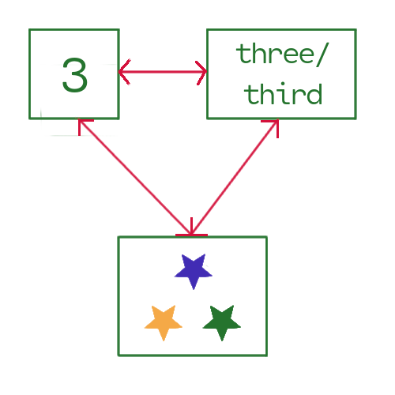
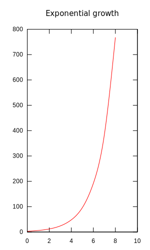

Numbers
Introduction
Numbers begin for many of us when our parents had us hold up three fingers to show everyone we were three years old. And so we were introduced to the unique world of seeing magnitude as an abstraction as we “map” or connect three fingers to three years of our life.
Then at some point we learn what mathematician Eugenia Cheng See her popular layman’s book How To Bake \(\pi\;\). One interesting aspect of this book is her treatment of category theory, which is a superset of type theory, much of which is baked into Haskell. calls the “counting poem,” i.e., we learn how to count from one to ten, usually on our fingers. Then begins the typical K-12 math curriculum of “When you see this, do this” conditioned learning. <insert big alas here>
Sometime in the later college years In many places in the world the typical American college Freshman-Sophomore math sequence of calculus, diff-eqs, and linear algebra is completed at the college-prep level. Germany and Switzerland, for example, have college freshmen starting with Analysis. — after Frosh calculus, differential equations, and linear algebra — begins “higher math.” These upper semester math courses are almost like a complete reboot of math, weeding out vague, ad hoc, parochial parochial: … very limited or narrow in scope or outlook; provincial… notions about math, replacing them with a rigorous, theoretical, formalistic, foundational understanding of math. As mathematician Joe Fields says, this is when you stop being a “see this, do this” calculator and become a prover, i.e., a deeper thinker about math.
Set theory is a big part of this formalism Make sure you’re attacking the LibreTexts series, e.g., one of the first three rabbit holes in the math section. . Set theory is an exacting, don’t-take-stuff-for-granted world, which turns out to be good for the computer world as well since computer circuits don’t attend human grade school, don’t learn poems, and don’t have fingers If machines were capable of conditioned learning, your car should be able to self-drive certain oft-travelled routes, e.g., from your home to the grocery store. . Again, if you want a computer to understand something, you have to spell it out in very precise and exacting ways. That is to say you’re always facing logical entailment (LE) with computers. So how does a computer understand numbers? And isn’t a computer doing numbers the way a clock does time? After all, a ticking clock that you wind up has no real concept of time…
One fascinating twist of mathematical history is how, on the whole, the Greeks seemed to favor geometry over numbers. Their mastery of geometry really got going with Euclid’s Elements ca. 300 BC, which starts with just a point and a line and from there builds up expansive theorems about complex geometric shapes, i.e., no numbers It was a long-revered feat of logical minimalism that all two-dimensional shapes in Elements could be produced with just a compass and a straightedge. Follow the Wikipedia link and note the animation of the construction of a hexagon. It wasn’t until the development of calculus and infinitesimal methods in the Renaissance that this compass-and-stick purity was set aside. . Even when Euclid’s geometry worked with the concepts of length and angles, no numbers were employed Later we’ll explore how Descartes united algebra and geometry. .
{kind=link}
With this section we’ll talk about numbers in a fairly theoretical but not really difficult manner. Along with the math, we’ll do some dives into Haskell that you should be ready for Make sure you’re getting along with the Haskell rabbit hole materials — at the very least worked through half of LYAHFFG. .
Number taxonomy
We’ll give a quick, general introduction of how numbers are grouped according to their traits and properties, i.e., a sort of math taxonomist’s view of numbers. Don’t worry about these definitions yet, just be aware that numbers come in different “species”
- \(\mathbb{N}\;\): the natural counting numbers, often starting with \(0\;\); otherwise, with \(1\;\).
- \(\mathbb{Z}\;\): whole number integers — just like \(\mathbb{N}\;\) but with the positive numbers duplicated as negative numbers, along with \(0\;\) between them.
- \(\mathbb{Q}\;\): the rational numbers — composed as \(\frac{a}{b}\;\) where \(a\) and \(b\) are integers and \(b\) cannot be \(0\;\) — although this is really too simple and we’ll be expanding on it later.
- \(\mathbb{R}\;\): the real numbers are the limit of a convergent sequence of rational numbers… Really? Yes, but this is a higher math sort of definition. Suffice it to say for now reals are the rational numbers (recurring decimals) along with ir-rational numbers (non-recurring decimals), e.g., the square root of \(2\;\). Lots more to come…
- \(\mathbb{C}\;\): the complex numbers are of the form \(a + bi\;\) where \(a\) and \(b\) are real numbers and \(i\) is the square root of \(-1\;\). Again, lots more later.
Yes, this is a mathematical taxonomy for numbers, i.e., numbers are grouped according to their mathematical traits and behavior, e.g., what you can do with them in the wild One aspect to keep in mind is that each number species is a subset of the next one up, i.e., \(\mathbb{N} \subset \mathbb{Z} \subset \mathbb{Q} \subset \mathbb{R}\ \subset \mathbb{C}\;\;\;\). Historically, we could say one evolved from the previous as math got more sophisticated and exacting with its definitions. We’ll go into the details of how this works. . For example, note the definition of \(\mathbb{Q}\;\), the rational numbers, or the \(\mathbb{R}\;\), the real numbers. But let’s not use loose metaphors like species anymore, rather, consider these groupings to be sets, e.g., the set of all counting numbers, the set of all complex numbers. We will proceed with numbers from a set theory perspective, using set theoretic explanations and especially notation along the way Set theory is the basic foundation of math, and is fundamental to the discrete math of computer science. But there’s a new kid is on the block, namely, category theory, which is even more foundational than set theory. With Haskell we’ll stick a toe into category theory now and then, just enough to get a few shivers. .
Numbers in Haskell
Always mindful of LE, we must negotiate a computer-logical world in which numbers are ultimately handled at the level of encoded logic on electrical circuits. But at this point we may point out that Haskell for its part mirrors the number system’s categorizations with number types For now don’t worry about precision and floating-point. These ultimately refer to how computers with electrical logic circuits represent numbers. We’ll dive into all that later. .
Int: limited-precision integers in at least the range \([-2^{29} , 2^{29})\;\).Integer: arbitrary-precision integers (read lots of integers, lots more thanInt).Rational: arbitrary-precision rational numbers.Float: single-precison floating-point numbers.Double: double-precision floating-point numbersComplex: complex numbers as defined inData.Complex.
One missing category is \(\mathbb{N}\;\). We’ll take a special look into what Haskell thinks about natural numbers up ahead.
The qualities of quantity
A number is a concept, first and foremost a symbol related to quantity or magnitude. And as such a number has great powers of abstraction. Numbers may be applied in the abstraction exercises of counting or enumerating, as well as measuring things But then measuring must be “quantified” by counting unit-wise what was measured; hence, everything comes back to counting. This will come up when we explore real numbers versus rational numbers. .
 The concept, the embodiment of three and "three-ness"Consider these qualities of quantities
- cardinality, or how many?
- ordinality, or what order?
- enumeration, or, generally, how do we count things?
As we’ve said, when we bring the computer into this quantification game, we cannot assume these basic qualities as given Inside your head you automatically know how many and in what order the numbers \(1\) through \(10\) are. However, a computer must be taught such basic quantitative qualities. .
Cardinality
In everyday language cardinal numbers are simply the counting numbers, \(\mathbb{N}\;\), either as words or numerical symbols. In set theory, however, cardinality has a different meaning, i.e., the number the objects in a set. So if we consider the box of stars in the diagram above to be a set of stars, then the cardinality of this set is \(3\) since there are three stars We indicate the set’s cardinality by surrounding the symbol for a set with pipes ( | ), e.g., \(|S_{stars}|\;\). This is not the same as absolute value, although they might be cousins.
\begin{align*} |\,S_{stars} \,| &= 3 \\ |\,\{a, b, c\}\,| &= 3 \\ |\,\mathbb{N}\,| &= \infty \\ |\,\mathbb{Z}\,| &= \infty \end{align*}But why are we being so “conceptual” about the simple idea of amount, and why must we give it a fancy name? Again, math likes to formalize things, nail things down. Starting with exactness and precision we can then build very complex and logically-based math Have a look at this Wikipedia discussion of cardinality. Later we will look into cardinal numbers, which is a deeper dive into set theory. . Now, if two sets have the same cardinality, is this somehow significant? Above, we see that both the set of natural numbers and the set of integers have infinity as their cardinality. Are, therefore, \(\mathbb{N}\) and \(\mathbb{Z}\) the same “size?”
The bijection principle states that two sets have the same size if and only if there is a bijection (injective and surjective together) between them We’ll look at injective, surjective, and bijective when we delve into functions from a set theory perspective. Also, mathematical logic will introduce us to if and only if. .
Which means \(|\,S_{stars} \,|\;\) and \(|\,\{a, b, c\}\,|\;\) can be matched up one-to-one, thus, they must have the same cardinality. But again, what about sets of things that supposedly have an infinite size? How do we “count,” or “pair up” infinite sets To excite your curiosity, is \(\infty + 1\) still just \(\infty\;\)? Are these sorts of imaginings about infinity ever found in the real world? These and many other twisty-turns are up ahead. ? Surprisingly, there are different kinds of infinity — which necessitates this exactness and preciseness. More about cardinality theory later.
Haskell and cardinality
The first thing to know about Haskell and set theory is, yes, we can
do real set theory with Haskell’s Data.Set package. But as beginners
learning the ropes we will start with a simpler representation of sets
through Haskell’s basic list data structure. Realize, however, that
a list is not a set; they are two different beasts, and we’ll have to
account for that. For one, a set may have duplicates, whereas a list
holds a definite sequence of things, i.e., every element of the list
is unique, even if some elements are repeated
So it’s not really a “grocery list,” it’s a “grocery set”
since \(\{eggs,sugar,coffee,eggs\}\;\;\;\) is invariably interpreted as
just \(\{eggs,sugar,coffee\}\;\;\), right? Or would you go ahead and
get eggs twice?
. So the set
\(\{1,2,1\}\;\) is the same as \(\{1,2\}\;\) is the same as \(\{2,1,1\}\;\)
because sets don’t mind duplicates, nor do they worry about
order
Why is this? There is a LE to the definition
of a set union, namely, \(A \cup B = \{x \;\;|\;\; x \in A \;\;\;or\;\;\; x \in
B \}\quad\). Consider the sets \(A = \{1,2,3\}\;\), \(B = \{2,3,4\}\;\),
and \(C = \{3,4,5\}\;\). If you draw out Their union \(A \cup B \cup C = \{x
\;|\; x \in A \;\;\text{or}\;\;x \in B\;\; \text{or}\;\;x \in C \}\quad\;\;\) as
a Venn diagram, you’ll see how duplicates get left out.
. But the lists [1,2,1], [1,2], and [2,1,1] are in
fact all different lists. Initially, we’ll practice set theory with
lists and build alternate set theory code based on lists. Then when we
understand “squirrel math” a little more, i.e., how to work with the
data structures known as trees, we’ll do proper set theory with
Haskell’s set theory module, Data.Set
Take a look at this Hackage page. It has a nice
little intro to Haskell’s sets. Get in the habit of perusing Hackage
whenever you’re using a Haskell function or data type you don’t quite
understand. Sometimes you’ll have to just dive into the code, but
sometimes there are excellent intro docs like this.
. For the immediate
future we’ll consider a list to be a beginner’s substitute for a
set. And so a simple “how many” function on a list standing in for a
set is length
length [1,2,3,4,5]
5
Again, more excitement to come. Watch this space.
Ordinality
In everyday language the concept of order is conveyed when we say first, second, third, fourth, etc See this brief discussion. . And we’re done, right? But again, as seen from set theory — as well as from the computer world — (re-)establishing order is important and cannot always be taken for granted. In fact, a great deal of math lore surrounds ordinality.
The counting numbers, the set \(\mathbb{N}\;\), would seem to have order built in. For example, everybody knows that \(3\) comes after \(2\;\) etc., they’re in ascending order based on the incrementally greater amounts they represent. And neither does the set \(\mathbb{N}\;\) have repeats. But order, and all it’s implications, is not always a given in real life. What if we wrote the numbers from one to ten on small squares of paper, put them in a box, and then shook them out on the floor in a straight line? Would they be in order? Chances are, no. And what about sets of things that aren’t inherently numerical, such as colors?
So if we don’t have things in proper order—which is often the case in the real world—we have to put things in order ourselves. And that means we will need to sort a set of unsorted elements into some order. Sorting, in fact, is one of the more basic tasks computers do in the everyday world.
But to sort we need to compare things. Obviously, ten whole numbers written clearly on ten squares of paper can be easily sorted by hand A jigsaw puzzle can be seen as a sorting game based on shape, color, and patterns of the pieces. . But what if we had thousands of squares of paper, each with a unique number? Then we’d have a long task ahead of us. But no matter how big or small the task, we would compare two numbers at a time and then make a judgement based on whether one number was
- greater than
- equal to
- less than
the other number, then rearranging as needed.
Ordinality in Haskell
Haskell is a typed language with a feature called type classes For a quick introduction with examples go here in LYAHFGG. . A Haskell type class encompasses traits, patterns, concepts, or what we might call a certain “-ness” that can be imparted to data types. In Haskell, for example, numbers and the characters of the alphabet can be directly compared for “equal-ness,” and when we test at the ghci REPL prompt, this seems to be built-in
((5 == 3) || ('a' == 'a')) || ('b' == 'B')
True
Mindful of LE, we see that Haskell’s Eq class
housing this equal-ness must have some sort of behind-the-scenes
mechanism that allows us to take two things, analyze them, then return
a decision, true or false (yes they are equal, no they’re not equal),
on whether two said things were equal or not — all of this just for
doing some typing, e.g., 5 == 3 into the REPL.
Something else to consider is how some things don’t necessarily have
the concept of equal or not equal straight out of the box. What if we
created a data type for colors and we wanted to compare the individual
color values for equal-ness? Intuitively, we might say red, yellow,
and blue are equal since they are all primary colors; likewise,
orange, green, and violet are equal because they’re the secondary
colors. But what if we just say each color is equal to itself and not
equal to any of the others? … So how would we establish equal-ness
for colors? If we want to type Green == Blue into the REPL it’s up
to us to have created some sort of equal-ness and told Haskell about
it.
Data types that need to establish equal-ness for themselves can apply
to the Haskell Eq type class for membership. Type class membership
is registered with an instance statement. To see all the data types
that have an instance registered with Eq we can use :info
(abbreviated :i) at the REPL
Go ahead and check out the hackage.haskell.org entry for Eq
here. Note the properties (==) should follow: reflexivity, symmetry,
transitivity, extentionality, and negation. We’ll dive into what this
all means when we look closer into the higher algebra of sets and
functions. Note all the built-in, “batteries-included” Eq instances
for the various types. Some are rather exotic.
:i Eq
type Eq :: * -> Constraint
class Eq a where
(==) :: a -> a -> Bool
(/=) :: a -> a -> Bool
{-# MINIMAL (==) | (/=) #-}
-- Defined in ‘ghc-prim-0.7.0:GHC.Classes’
...
instance Eq Int -- Defined in ‘ghc-prim-0.7.0:GHC.Classes’
instance Eq Float -- Defined in ‘ghc-prim-0.7.0:GHC.Classes’
instance Eq Double -- Defined in ‘ghc-prim-0.7.0:GHC.Classes’
instance Eq Char -- Defined in ‘ghc-prim-0.7.0:GHC.Classes’
instance Eq Bool -- Defined in ‘ghc-prim-0.7.0:GHC.Classes’
...
which gives us a long list (abbreviated above) of data types that have
equal-ness defined
Quick LE question: Can functions be compared for equal-ness?
Here’s a direct quote from a prominent combinatorics text: When two
formulas enumerate the same set, then they must be equal. But not so
fast in the computer world. To say f x == g x Haskell isn’t
logically set up to actually prove (demonstrate) and accept that f
and g always give the same results given the same x input. We
would literally have to test every possible x, which is not
possible. Still, we’ll examine this idea a bit closer soon. It’s a
real big deal in numerical math.
. Notice the two “prescribed” methods (functions)
(==) and (/=). These functions are the mechanism used by Eq to
establish equal-ness. They must be custom defined in each instance
declaration in order for a data type to have its own established
equal-ness
Note {-# MINIMAL (==) | (/=) #-} which is a directive
meaning we may choose to define either (==) or (note the or
pipe | ) (/=), i.e., we don’t actually have to define both because
by defining one, the other will be automatically generated. Neat.
. And so if you create a new type, you, the
programmer, must come up with your own version of these two functions,
(==) and (/=) to establish the trait, the property of equal-ness
for that new data type. As LYAHFGG notes, the type signature for the
equal-ness function (==) is
:t is short for :type.
:t (==)
(==) :: Eq a => a -> a -> Bool
which indicates (==) takes two inputs of some type a and returns a
Bool type, i.e., either True or False. Good, we saw how that
works with our examples above. But there’s another wrinkle to this
story. So if (==) is a function that takes two objects of type a,
e.g., two integers, real numbers, characters, booleans, etc., how can
we use this same symbol (==) in so many different contexts? Looking
above, how did Haskell know to use integer equal-ness rules (defined
by instance Eq Int) when comparing integers, and then letter
equal-ness rules (defined by instance Eq Char) when comparing
letters? This feat is what we call ad hoc polymorphism
ad hoc, from Latin to this, is something put together on
the fly for one narrow, pressing, or special purpose. polymorphic,
from Greek polus much, many, and morphism, having the shape, form,
or structure, i.e., having many shapes.
, which
allows just a single function symbol, e.g., (==), to be used
(overloaded) in many different contexts. And so Haskell figures out
behind the scenes which instance to apply. Neat.
Let’s take a closer look at a color type by defining our own
As LYAHFGG says, Read and Show are also type classes to
which you may register your data type. Here we’ve used the deriving
keyword to let Haskell figure it out, i.e., we’re not defining
Read and Show ourselves; rather, we’re telling Haskell to
auto-generate and register these instances for us.
We’ll go into more detail about declaring our own data types
as we progress. But for now we’ll say Color is a sum type, as
opposed to a product type. Sum types are patterned after the
addition principle which we’ll also go into later. Note, the pipes
\(\;|\;\) between the colors can be understood as logical or—as in
we must choose one or the other of the colors.
data Color = Red | Yellow | Blue | Green deriving (Show,Read)
Obviously, the colors red, yellow, blue, and green have no intrinsic
numerical properties by which to compare one with the other. However,
Haskell’s type class system still allows us to create some manner of
equal-ness for it. And so we write this version of an instance of
Eq for Color
instance Eq Color where
Red == Red = True -- could also be (==) Red Red = True
Yellow == Yellow = True
Blue == Blue = True
Green == Green = True
_ == _ = False -- anything getting to this point must be false
And so we’ve hand-coded our own equal-ness for Color by spelling out
how (==) works for Color. This literally tells Haskell what
Color equal-ness should be by customizing how the function (==)
should work. Let’s have another look at the type signature for (==)
:t (==)
(==) :: Eq a => a -> a -> Bool
As LYAHFGG notes, the Eq a part is known as a class
constraint. This means whatever a might be
…and this is an example of parametric polymorphism where
the parameter (aka type variable) a can be any data type. In
Haskell, smaller-case letters such as a, b, c, etc., are generic
parameter names and can indicate any data type. In (==) :: Eq a => a
-> a -> Bool we see that two inputs of the same type a are fed to
(==), which produces a Bool output. Another example would be
myFunc :: a -> b -> a. Here the type signature says the inputs don’t
have to be of the same type (although they could be), but no matter
what type the parameter b is, the output will be of type a.
, it must have an
equal-ness instance already registered for it — which we do —
otherwise, Haskell won’t know how to compare two things of a for
equal-ness
For our Color we’ve created our own equal-ness, although in
this example we could have let Haskell figure it out, i.e., ...|
Green deriving (Eq) would have done the same thing. This was an easy
one. Haskell can’t always figure out the less obvious cases.
.
(Red == Red) && (Red /= Green)
True
Good, it’s working and we now can compare Color values for
equal-ness, but how do we order colors? No matter how we establish
one color before the other, it might seem arbitrary, but we can do it
if we want. For basic order-ness Haskell has the type class Ord to
which types can register
:i Ord
type Ord :: * -> Constraint
class Eq a => Ord a where
compare :: a -> a -> Ordering
(<) :: a -> a -> Bool
(<=) :: a -> a -> Bool
(>) :: a -> a -> Bool
(>=) :: a -> a -> Bool
max :: a -> a -> a
min :: a -> a -> a
{-# MINIMAL compare | (<=) #-}
-- Defined in ‘ghc-prim-0.7.0:GHC.Classes’
...
instance Ord Ordering -- Defined in ‘ghc-prim-0.7.0:GHC.Classes’
instance Ord Int -- Defined in ‘ghc-prim-0.7.0:GHC.Classes’
instance Ord Float -- Defined in ‘ghc-prim-0.7.0:GHC.Classes’
instance Ord Double -- Defined in ‘ghc-prim-0.7.0:GHC.Classes’
instance Ord Char -- Defined in ‘ghc-prim-0.7.0:GHC.Classes’
instance Ord Bool -- Defined in ‘ghc-prim-0.7.0:GHC.Classes’
instance Ord Integer -- Defined in ‘GHC.Num.Integer’
...
Note how the Ord declaration itself has a class constraint, i.e.,
Eq a =>. This means any data type a must already have its Eq
instance registered. Hence, Eq is a sort of super-class, and yes,
type classes can build hierarchies of themselves.
Again, we see Ord has a minimum requirement for order-ness, namely,
that we define the method
The habit of calling a set of functions associated with a
Haskell type class methods might be a hold/spill-over from the world
of object-oriented programming where an OOP class will have method
functions attached to it. This is called encapsulation, i.e., a
system for keeping things that belong together together. However, an
OOP class and a Haskell type class are entirely different beasts. So
let’s keep our head stuck in the Haskell particle accelerator for
now…
(function) compare … and then we
get all the other order-ness methods, (<) … min for free, as in
Haskell is smart enough to figure them out just based on what you gave
for compare. Neat
In general, anytime your programming language starts writing
code for you, it’s cool…
.
:t compare
compare :: Ord a => a -> a -> Ordering
The function compare is, like (==), a binary (two inputs)
operation that takes inputs of the same data type a and returns
something of type Ordering. So what is Ordering? Let’s ask
:i Ordering
type Ordering :: * data Ordering = LT | EQ | GT -- Defined in ‘ghc-prim-0.7.0:GHC.Types’ instance Eq Ordering -- Defined in ‘ghc-prim-0.7.0:GHC.Classes’ instance Monoid Ordering -- Defined in ‘GHC.Base’ instance Ord Ordering -- Defined in ‘ghc-prim-0.7.0:GHC.Classes’ instance Semigroup Ordering -- Defined in ‘GHC.Base’ instance Enum Ordering -- Defined in ‘GHC.Enum’ instance Show Ordering -- Defined in ‘GHC.Show’ instance Read Ordering -- Defined in ‘GHC.Read’ instance Bounded Ordering -- Defined in ‘GHC.Enum’
There’s a lot of information here. Note the data type declaration for
Ordering is
... data Ordering = LT | EQ | GT ...
While the type Bool had two data constructors True and False,
Ordering has three — LT, EQ, and GT. Now, let’s write code
to register an instance of Ord for Color
We make heavy use of the wildcard _ by which we mean any
variable can be in the _ position. For example compare Red _ = GT
means when we compare Red to anything else, Red will always be
greater than it. We also leveraged the order of these declarations,
i.e., by having compare Red _ = GT at the very start, Red versus
anything will be sorted out first. This is a conditional situation
implicitly, which we’ll use lots more.
instance Ord Color where
compare Red Red = EQ
compare Red _ = GT
compare _ Red = LT
compare Yellow Yellow = EQ
compare Yellow _ = GT
compare _ Yellow = LT
compare Blue Blue = EQ
compare Blue _ = GT
compare _ Blue = LT
compare Green Green = EQ
Again, the Ord type class required us to create our own compare
method, which painstakingly we did. Now we can compare two values
of Color for order-ness with our basic Ord comparison operators
Remember, math operators in Haskell are just a sort of
function. Which means (==) Red Red is identical to Red ==
Red. Haskell requires operators in the function (prefix) position
to be in parentheses, whereas in the infix (between) position they
can be naked operators. Notice min Red Yellow that min is in the
prefix position. Just put back-ticks around it to use it infix: Red `min` Yellow.
,
>, <, and ==,
((Blue < Green) || (Red == Red)) && (Yellow >= Blue)
True
(min Red Yellow) > (max Blue Green)
True
Now, how many possible combinations of these four colors would we have to make in order to test all possible cases? This is a topic the basics of which we’ll explore later. But here’s a taste of these future endeavors. Perhaps you noticed in LYAHFGG the talk about list comprehensions. These mimic set comprehensions fairly closely
\begin{align*} & C = \{Red,Yellow,Blue,Green \} \\ & \{(x,y) \;|\; x \in C, \;y \in C \} \end{align*}And in Haskell
cset = [Red,Yellow,Blue,Green]
[ (x,y) | x <- cset, y <- cset]
[(Red,Red),(Red,Yellow),(Red,Blue),(Red,Green),(Yellow,Red),(Yellow,Yellow),(Yellow,Blue),(Yellow,Green),(Blue,Red),(Blue,Yellow),(Blue,Blue),(Blue,Green),(Green,Red),(Green,Yellow),(Green,Blue),(Green,Green)]
Let’s define another color type and simply rely on Haskell’s
deriving to create instances for Eq and Ord
data Color2 = Green2 | Blue2 | Yellow2 | Red2 deriving (Show,Read,Eq,Ord)
(Red2 == Red2 && Red2 == Green2)
False
For equal-ness deriving simply made everything equal to itself and
not equal to other colors—just like we did before by hand. Then for
order-ness deriving simply took the Color2 data constructors in
the order they were declared and ranked them in ascending order
((Green2 < Blue2) == (Blue2 < Yellow2)) == (Yellow2 < Red2)
True
Types of types
We should explain one more thing at this point, namely, what that
first line of our :i readouts says
:i Color
: type Color :: * : data Color = Red | Yellow | Blue | Green : -- Defined at omni1.1.hs:29:1 : instance [safe] Eq Color -- Defined at omni1.1.hs:30:10 : instance [safe] Ord Color -- Defined at omni1.1.hs:36:10 : instance [safe] Read Color -- Defined at omni1.1.hs:29:57 : instance [safe] Show Color -- Defined at omni1.1.hs:29:52
type Color :: * is telling us that the type of the type Color is
*. Huh? So if the type of values Red or Green is Color, the
type of Color is it’s kind, here expressed by the symbol
*. Color has kind *, which
says Color is a type constructor of arity null, or a nullary
type constructor. So what does this mean? Let’s take
it apart…
Arity is something functions have. \(f(x) = x^2\;\) has an arity of one since it takes just the one parameter, \(x\). For \(f(x,y) = x^2y^{1/3\;\;}\) arity is two — and we usually say binary since it takes two parameters, \(x\) and \(y\;\). But \(f() = 5\;\) is a function that takes no parameters and always returns \(5\;\). It’s arity is null This may be slightly confusing since in Algebra you probably learned about constant functions expressed as, e.g., \(f(x) = 5\;\), which is just a horizontal line \(y = 5\) for any \(x\;\) you plug in. .
In the second line, the data type declaration line, we see the left
side of the = is Color, which is the type constructor, and on
the right side are the data constructors or value constructors,
which are Red | Yellow | Blue | Green, which are also referred to as
just the values of Color. Again, the type of Red is Color, and
the type of Color is *, which is Haskell’s way of noting Color
has an arity of null. Which is just like \(f() = 5\;\) only that it has
values
If a data constructor (also called value constructor) has a
nullary type constructor, as does Color, then just like with \(f() =
5\) the \(5\) is a constant, and so are the values Red, Yellow, Blue,
Green considered constants.
Red, Yellow, Blue, or Green as possible values
instead of just \(5\). And like \(5\), we can consider them as
constants. Yes, it might be odd to consider a data type as a sort of
function taking parameters, but under Haskell’s hood they do. So we
might say Color takes the null parameter and returns one of its
color data constructors as a value. Odd, but that’s Haskell.
So what would be an example of type with higher arity? What would a
data type look like that had a type constructor on the left side of
= that did in fact take input like a function — and what does such
a thing give us? Consider this data type
data StreetShops a = Grant a | Lee a | Lincoln a deriving (Show,Read)
And its kind will look like this
:k StreetShops
StreetShops :: * -> *
The form * -> * is Haskell’s way of saying the data type
StreetShops indeed takes a single parameter like a function. And
that parameter a is, like before, leveraging parametric
polymorphism, meaning a can be any data type. This in turn makes
StreetShops polymorphic, i.e., its values Grant, Lee, and
Lincoln are able to take input of different data types. For example,
if we want our StreetShops value Grant to represent a list of all
the shops we visit on Grant Street
We’ll give data constructor Grant a list of elements of type
String, a Haskell String being, in reality, a type synonym for
list of type Char, which are individual Unicode characters.
λ> "Tre Chic" == ['T','r','e',' ','C','h','i','c']
True
shopsOnGrant = Grant ["Tre Chic","Dollar Chasm","Gofer Burgers"]
shopsOnGrant
Grant ["Tre Chic","Dollar Chasm","Gofer Burgers"]
:t shopsOnGrant
shopsOnGrant :: StreetShops [String]
So each of the data constructors can take a parameter a, which can
be anything. If we want a StreetShops value to hold the average
number of visitors per day
Haskell has great powers of inferring, i.e., when we ask it
what type visitorsOnGrant is, it deduces this from how we created
visitorsOnGrant, namely: visitorsOnGrant :: Num a => StreetShops a.
visitorsOnGrant = Grant 1294
visitorsOnGrant
Grant 1294
:t visitorsOnGrant
visitorsOnGrant :: Num a => StreetShops a
Again, StreetShops, by having kind or arity of one, is polymorphic
in its one parameter a. And in reality there is no just
StreetShops type; instead, StreetShops has to be teamed up with
another type to be used. To be sure, StreetShops is a contrived
example of the * -> * kind. In reality there are probably better
ways of managing data about streets. But we’ll certainly use lots of
data types with higher arity, especially when we start going deeper
into some of the more math-derived features in Haskell. And so that’s
why we wanted to introduce what may seem pretty abstract at this
point
As another example of introducing an abstract subject out of
the blue and way early, do you remember middle school math trying to
show you commutativity, distributivity, and associativity? Well, they
become important in higher math, especially in abstract
algebra. Haskell has lots of higher algebra baked in, and yes, you’ll
finally see a real-world application of commutativity, distributivity,
and associativity soon!
.
The Num super class
Did you notice that Num a => class constraint in the type details of
visitorsOnGrant? When we created the variable visitorsOnGrant we
gave the value constructor Grant a number — but we didn’t say what
sort of number, Int, Integer, Float… Haskell then inferred
that it was something numerical and constrained it with the type class
Num…
Let’s take another look at the concept of class hierarchy. Remember
how we had Eq equal-ness as a prerequisite for Ord order-ness? We
needed equal-ness to then create order-ness. Consider this
:t 1
1 :: Num p => p
This is Haskell’s way of saying, Yes, this is some sort of literal
number you gave me. And all I can say back to you is it is a
number. And so the generic parameter p has the class constraint that
whatever p may be (here we provided 1), it must be registered with
the type class Num. So what is this Num class?
:i Num
type Num :: * -> Constraint
class Num a where
(+) :: a -> a -> a
(-) :: a -> a -> a
(*) :: a -> a -> a
negate :: a -> a
abs :: a -> a
signum :: a -> a
fromInteger :: Integer -> a
{-# MINIMAL (+), (*), abs, signum, fromInteger, (negate | (-)) #-}
-- Defined in ‘GHC.Num’
instance Num Word -- Defined in ‘GHC.Num’
instance Num Integer -- Defined in ‘GHC.Num’
instance Num Int -- Defined in ‘GHC.Num’
instance Num Float -- Defined in ‘GHC.Float’
instance Num Double -- Defined in ‘GHC.Float’
...
Here we see number-ness defined through its methods. Whatever type
might want to be considered a number will need to have these
operations of addition, subtraction, multiplication, negation, etc.,
i.e., register an instance with the Num class
Actually, our example :t 1 relies on the method
fromInteger, but we’ll unpack that later. Even more actually, a
whole lot of complex magic is going on behind the scenes when dealing
with naked (literal) numbers like this. So yes, this is an example of
LE for doing numbers on computers with programming languages.
.
Actually, Num is a great place to start really seeing how
mathematical Haskell is. :i Num gives us good look, but, as we
mentioned before, hackage.haskell.org, in this case GHC.Num.
GHC.Num
What is this? Why is this mentioned? A simple starter explanation is
that we have here a set of guidelines for how addition and
multiplication must behave in order to have an instance of
Num. Let’s continue…
So if multiplication is just a glorified sort of addition, and division is glorified subtraction Multiplication is often phrased, e.g., “five fives,” i.e., five sets of five are to be considered (read added) together. Likewise, division “divide \(8\) by \(2\) is just subtract \(2\) from \(8\) over and over and keep track of how many times you can do this until there’s either nothing left or a number less than \(2\;\). , then that makes addition and subtraction the basis of arithmetic, but they have a very fundamentally different behavior when used in the wild that we must, in turn, account for. Yes, addition puts things together and subtraction takes something away from another thing. But there’s further -ness to addition that subtraction doesn’t have, namely, order doesn’t seem to matter, whereas it does with subtraction (and of course division). Obviously it matters which number gets subtracted or divided by which, but not with addition and multiplication.
We mentioned binary operators before, which means whenever we add or
subtract we’re really taking just two numbers at a time
Think about it, even when you’ve got a whole list (vertical or
horizontal) of numbers to add, you’re really doing them two at a
time. One number becomes the addend and the other becomes the
augend, which is sort of a carrying-over holder to which the next
addend is added. So if we’re adding \(1 + 2 + 5\;\) we might add \(1 + 2\;\)
and then remember the augend is \(3\;\), then take addend \(5\) and add it
to augend \(3\) to get \(8\;\).
, i.e.,
the arity of the (+) operator is two, or (+) is a binary
operation. But again, why are we concerned with this?
Notice at GHC.Num it says
The Haskell Report defines no laws for
Num. However, (+) and (*) are customarily expected to define a ring and …
The Haskell Report is a reference manual for how Haskell is put
together, often just showing us how certain pieces of the language are
coded under the hood. Typically, you see a Backus-Naur
description
More on Backus–Naur Form later. It’s used extensively to
create a metasyntax for programming languages. Maybe rabbit-hole this
Wikipedia treatment.
, then some description/talk, maybe also examples
and “translations
Try Haskell’s list comprehension. Don’t expect to understand
what they’re saying just yet, but appreciate the magic and all the
devilish details. And while you’re at it you might further appreciate
just what a list comprehension is by looking at this Rosetta Code
article. Again, YMMV on what you can grasp at this point, but maybe
notice how Haskell is very Set-builder notation-friendly, while
other languages just seem to be kludging something together. Again,
maybe a bit too advanced, but check out Haskell’s entry for the
Pythagorean triplets. Experiment with the code. A big part of learning
to program is to read and experiment with code.
.” GHC.Num says there is no particular
mention in the HR of these arithmetical laws, but (+) and (*)
should define a ring. So here the lore is getting deep. What is
meant by a ring
Have a look at this LibreText explanation but don’t try it
without first getting through the basic set theory stuff in the
assigned rabbit-hole.
? Well, a ring is something from abstract
algebra, which you’ll see in a mathematics curriculum once you’re
beyond Frosh college math including calculus, differential equations,
and linear algebra. The basic idea is that a ring is a set
containing a set of numbers, along with key arithmetical operators
behaving in certain ways. In other words, a ring is a sort of like a
package which includes numbers and the operations that work on those
numbers. Then neatly bundled like this, we can do and say things about
them as a whole. But let’s leave it at that for now. We’ll soon
explore other similar “packagings” (semigroups, monoids, etc.) from
abstract algebra that are brought over for use in Haskell.
Continuing, if the so-called fundamental laws of arithmetic …taken from Richard Courant’s seminal What is Mathematics? say
- \(a + b = b + a\quad\) (additive commutativity, AC)
- \(ab = bc\quad\) (multiplicative commutativity, MC)
- \(a + (b + c) = (a + b) + c\quad\) (additive associativity, AA)
- \(a(bc) = (ab)c\quad\) (multiplicative associativity, MA)
- \(a(b + c) = ab + ac\quad\) (distributive law, DL)
then in order to have “number-ness” a Num instance for a number type
should have these behaviors when added or multiplied. But if we
compare, these five laws concerning addition and multiplication
aren’t exactly the same as those Haskell laws mentioned above from
GHC.Num. For one, Where’s #2, multiplicative commutativity, i.e., \(ab
= bc\;\)? It turns out not everything has MC; hence, we don’t want to
be obligated to defining MC for everything. An example is when
multiplying matrices. Maybe we’re not that far, but no, matrix
multiplication does not guarantee \(ab = bc\;\). Another potential
divergence is additive inverse and multiplicative inverse. These
should be defined on any type wanting to join the Num class. More on
that later.
\(\mathfrak{Fazit}\;\): Num is a super-class that is a prerequisite
“constraint” for anything number-like in Haskell. And so any type with
which we want to do basic arithmetic, i.e., to have number-ness, must
register an instance with the type class Num, defining the minimum
set of methods in order to perform basic math operations.
This has been a brief, hurried introduction to ordinality — with a small detour to explore some of the LE of what numbers are vis-à-vis Haskell and computers. The notion of order is everywhere and cannot be taken for granted. And the idea of ordinality goes pretty deep in higher math. See this and this fire hose treatments as somewhere between RO and RFYI. (And see this for something we’ll eventually take a Haskell stab at.) Note especially the order axioms and the properties of ordered fields. In general, these treatments are upper-level/grad math — or, yes, upper-level comp-sci, depending on your future school’s program. Remember, comp-sci dips and weaves around and through higher math with little or no warning — a bit like physics routinely takes off into high math-land as well.
Enumeration, counting, listing out
Enumeration is counting is enumeration. And yet they seem like different tasks. To count something seems like a dynamic process. We take objects out of a box and count how many there are. To enumerate would seem to be more about taking objects out one-by-one and “giving each a number.”
But in the field of combinatorics the business of counting-enumerating goes far beyond taking objects out of a box and associating numbers with them. We could say “listing out” for enumeration, and there are very many phenomena that have very deep, very complex listings outs.
With sets the simplest way to have a set is to literally name each element one by one. This is considered enumeration as well. Then there’s the use of ellipses (…) to indicate we want elements “filled out” according to some scheme we’re following. But this can run into ambiguities. For example \(\{1,2,3,\ldots\}\;\) could be just a listing of the counting numbers, or it might be the Fibonacci sequence where each new number (beyond the first two) is the previous two added together, i.e., \(\{1,2,3,5,8,13\ldots\}\;\;\).
Induction
Filling out or enumerating a set often rests on the concept of induction.
Enumeration in Haskell
The most basic enumeration in Haskell is filling a range of numbers.
Numbers as algebraic systems
Conceptually, our “starter set” of numbers, the so-called natural numbers or counting numbers Group of things are considered countable if we can create a one-to-one relationship between the things and the counting numbers, which typically should start with \(1\;\). Things in everyday life are typically countable; but what about all the points on the real number line? , symbolized by \(\mathbb{N}\;\), are not hard to imagine. You’ve been using them since Kindergarten where you connected the numeral symbols, \(1,2,3\ldots\;\) and names, \(one, two, three\ldots\;\) of numbers with amounts of things. Then we moved on to doing arithmetic with these counting numbers; first stop, addition.
Addition was never a problem with the natural numbers, i.e., whatever from \(\mathbb{N}\) we wanted to add together would result in just another member of \(\mathbb{N}\;\). And since multiplication is just a glorified form of addition, we’re safe there, too. But what happens when we try to subtract and divide with members of \(\mathbb{N}\;\)? Clearly, we need to expand our starter set to deal with answers that lie outside of the positive natural numbers. For subtraction we need a new set, namely, the integers \(\mathbb{Z}\;\) From the LibreTexts rabbit hole, think of \(\mathbb{Z}\) as everything in \(\mathbb{N}\) along with the negative version of all of \(\mathbb{N}\;\), i.e., \(\mathbb{Z} = \{\ldots,-3,-2,-1,0,1,2,3,\ldots\}\) . As you saw in the first rabbit hole above, mathematics takes a more formal approach to issues like this. In fact, there are five main groups of numbers:
- \(\mathbb{N}\;\): Natural numbers.
- \(\mathbb{Z}\;\): Integers.
- \(\mathbb{Q}\;\): Rational numbers.
- \(\mathbb{R}\;\): Real numbers.
- \(\mathbb{C}\;\): Complex numbers
which we will study in turn. We mention numbers in the context of algebraic systems because
Natural numbers
The natural numbers are the counting numbers
Taking a stab at a word definition of \(\mathbb{N}\) in a quasi-set notation style
\begin{align*} \mathbb{N} = \{\text{all the whole numbers starting with zero}\} \end{align*}But what do we mean by all and starting with? For example, is there any order The order of a group of things is its ordinality, while the number of a collection of things is its cardinality. implied, or are these whole numbers just in whatever order as long as they’re after zero? Of course our intuitive understanding of what counting numbers are saves us from silly hypothetical questions like this, right?
At some point around that Kindergarten time we wandered into our first serious mathematical abstraction when we learned about numbers that have two “places” or more: ten, eleven, twelve, then the teens, then twenties, thirties … on out to hundreds, and then even thousands. This required an understanding of positional notation See Positional notation. using the ten base10 Arabic numerals, \(0\) to \(9\), and placing them in increasing powers-of-ten columns. But this was all done at an intuitive level meant to cement in our minds the fundamental idea that distinct amounts have distinct designations, i.e., names and numeric symbols. We weren’t expected to understand the underlying idea of positional notation.
But seriously, how can we indicate five things without the numerical symbol \(5\) or the words five or fifth? We might imitate an old mechanical watch and bark out tick! five times My mechanical pocket watch has a face with Roman numerals evenly positioned around a circle, twelve main numbers for the hours with little marks between each number for the minutes and seconds. But internally, the mechanics only know about ticking; they know nothing of the numbers and their positions on the watch face. This means the steady ticking is mapped to the watch face dumbly. Is ticking, therefore, the most fundamental sort of counting? When combined with a number display, perhaps. , hoping that someone is keeping track of how many ticks there were. But there’s the rub: the whole idea of counting relies on some sort of ordering and enumeration scheme—right, keeping track. So five of something implies one more than four of something, which in turn implies two more than three things, et cetera.
Peano’s approach to the natural numbers
The nineteenth century saw mathematics going through an intense round of mathematical formalism and exactness. Mathematicians wanted to firm up the underpinnings of math, clean up sloppy, intuitive, hand-waving half-understandings and put math on solid, unassailable logical footing. One such mathematician was Giuseppe Peano.
At issue was just what were those most basic mathematical building blocks, the counting numbers? Sure, there’s the Kindergarten version of \(\mathbb{N}\;\), but was there something foundational underneath just rattling off numbers like a child? After all, that’s not much different from circus animal training.
Let’s warm up by considering what we said in the last section about \(5\) being what came after \(4\), which in turn came after \(3\) and so on. In effect we’ve got one number succeeding another. Hence, in theory at least, we could start at \(0\;\) and then literally succeed our way up to any number we want, which is like saying every journey starts with a first step, followed by the next step, then the next, etc. Again, this may seen trivial-silly, but there’s a lot of math packed in this concept.
A first stab at a formalization
Later we’ll go into a more detail about what a function really is, but
for now our basic understanding of functions will do. So let’s bring
to the idea of one thing succeeding another a successor function
\(s(n)\;\). For example, if we start at \(0\), the successor to \(0\) is
\(1\;\), or \(s(0) = 1\;\). But if we’re going to be highly abstract and
pure about this, we don’t want to rely on the base\(_{10}\)
numbers. Instead, we’ll just keep reapplying the successor function
\(S\;\) similar to nesting Russian dolls
Russian or matryoshka dolls:
Awkward? YMMV Your mileage may vary… . But we have to admit we’ve defined something akin to the natural numbers using just the constant \(0\) and a successor function applied to it. Now, let’s define addition on this system. To do this we’ll use these two identities
\begin{align} x + 0 &= x \\ x + s(y) &= s(x + y) \end{align}This should cover all possible cases of addition. Testing, let’s add \(1\) and \(2\;\) or \(s(0) + s(s(0))\;\)
\begin{align} s(0) + s(s(0)) &= \\ s(s(0) + s(0)) &= \\ s(s(s(0)) + 0) &= s(s(s(0))) \end{align}- We apply (2) to (3) to get (4); in effect abstracting \(1+2\;\), the left side of (2), to the successor of \(1+1\;\), the right side of (2).
- But now the inner part of (4), namely \(s(0) + s(0)\;\), resembles (2) allowing us to match the first \(s(0)\) to \(x\) and the second to \(s(y)\), which in turn allows us to rewrite it as \(s(s(0) + 0)\;\).
- But according to (1) \(s(0) + 0 = s(0)\;\;\), leaving \(s(s(0))\;\)
- Including back in the outermost \(s\) we now have \(s(s(s(0)))\;\) our answer.
What have we accomplished with this convoluted method? For one, we’ve reduced the entire idea of the natural numbers, along with adding two of these reimagined natural numbers, to just a small set of symbols, namely
- a constant symbol \(0\)
- variable symbols \(x\) and \(y\)
- and a function symbol \(s\)
And with these four symbols we create statements made of terms built from our symbols as in (1) and (2), e.g., \(x + 0\;\) is term, and \(s(x + y)\;\) is another term. This allows us to state our problem as terms, then rewrite these terms step-by-step as we did above to get to a final term rewrite that is our answer. And so we have a term rewriting system that provides addition of our natural numbers Rewriting is basically what you do when you, e.g., take steps to simplify or reduce a fraction. More on normal or canonical forms later. . As Madhavan Mukund says &mukund2009lecture
In a sense, rewriting is at the heart of all formulations of computability — any computational device’s fundamental behaviour is to read symbols and generate other symbols, which amounts to rewriting the input as the output.
So what’s the alternative? Your modern digital computer creates a human-friendly world of numbers and addition with the help of base\(_{2}\) binary numbers, computer circuit board logic gates, and lots and lots of Assembler code to manage it all. Then come the higher languages which present math as we normally see it, e.g., \(1 + 1 = 2\;\). When seen in this light, we might begin to appreciate a very basic, fundamental fact about modern computing, namely, we can create strategies to accomplish logical calculations by manipulating (rewriting) terms built of symbols. Again, this adds a whole new dimension to our age-old math world mix of scrolls, paper, books, pencils, blackboards and chalk, and those mysterious mental representations of math inside our human brains.
A first look at induction and recursion At this point we can say induction and recursion (and recurrence relations in general) are just two sides of the same coin. Make sure you’ve got this LYAHFGG’s Recursion chapter under your belt.
Simplistic as our natural number system in the previous section may seem, there’s actually quite a bit of math theory to unpack to really understand what just happened. When we build a number up from repeated or nested application of the successor function \(s\) we were using the ideas of induction and recursion You may or may not have encountered induction. Typically, a math course will introduce it as a proof strategy. .
Again, this may seem very simplistic, but the idea of induction is inherent to the natural numbers. So if \(\mathbb{N}\;\) is also referred to as the counting numbers, then we count or enumerate things with them—going up as high as we need to
| 1 | 2 | 3 | 4 | 5 | 6 | 7 | 8 | 9 | 10 |
| 2 | 3 | 5 | 7 | 11 | 13 | 17 | 19 | 23 | 29 |
Let’s make a quick look-up table in Haskell for Table 1
primeEnum n | (n < 11) && (n > 0) = case (n) of
1 -> 2
2 -> 3
3 -> 5
4 -> 7
5 -> 11
6 -> 13
7 -> 17
8 -> 19
9 -> 23
10 -> 29
| otherwise = error "We only know the first ten primes."
primeEnum 9
23
Mathematicians abstracted “the next one” by saying for any \(n \in \mathbb{N}\;\), there will be a \(n+1 \in \mathbb{N}\;\;\) “next one after \(n\;\)”. Myriad phenomena in life and math lend themselves to this “if you’ve got this one, you can get next one” idea.
𝖟𝕭 zB: German abbreviation for zum Beispiel, or for example. : A classic proof using mathematical induction is the proposition Propositions are statements or assertions that can be proven to be either true or false. Make sure you went down this rabbit hole.
\begin{align*} P(n) = 0 + 1 + 2 + 3 + \ldots + n = \frac{n(n+1)}{2} \end{align*}
To be clear, we’re not deriving this formula
The story behind this formula is interesting. See this for the
backstory. Note the formula is
\begin{align*}
\frac{\text{(number of pairs)} ⋅ \text{(sum of each pair)}}{2}
\end{align*}
, we’re
attempting to prove it. So for example if we add the first three
numbers, according to the formula we should get \(6\;\)
An induction proof is a two-step process: a base case and an induction step
Base case: \(P(0)\)
\(P(0)\;\) is trivial. Just plug in \(0\)
\begin{align*} \frac{(0)(0+1)}{2} = \frac{(0\cdot1)}{2} = 0 \end{align*}Inductive step: Now we have to consider \(n \gt 0\;\) cases. The whole idea is to show that for any number \(k \ge 0\;\), if \(P(k)\;\) works, so will \(P(k+1)\;\)
We start by assuming what is called the induction hypothesis, i.e., that our statement \(P\) will hold for \(P(n)\;\). Here we’re saying for the unique case when \(n = k\;\) that \(P(k)\;\) is true
\begin{align} 0 + 1 + 2 + \ldots + k = \frac{k(k+1)}{2} \end{align}Good. Now we want to consider \(P(k+1)\;\). We’ll just add it on both sides since it is the next step after \(k\;\)
\begin{align*} (0 + 1 + 2 + \ldots + k) + (k + 1) = \frac{k(k+1)}{2} + (k+1) \end{align*}Now, we consider just the right side of this equation and do some algebraic manipulation
\begin{align*} \frac{k(k+1)}{2} + (k+1) &= \frac{k(k+1)}{2} + \frac{2(k+1)}{2} \\ &= \frac{k(k+1)+2(k+1)}{2} &= \frac{(k+1)(k+2)}{2} &= \frac{(k+1)((k+1)+1)}{2} \end{align*}Going back to our original left-hand side
\begin{align} (0 + 1 + 2 + \ldots + k) + (k + 1) = \frac{(k+1)((k+1)+1)}{2} \end{align}Now, compare (6) with (7). On the left-hand side of (7) we have the next step \((k+1)\;\) and on the right-hand side of (7) we have in the numerator the “number of pairs” increased from \(k\;\) to \(k+1\;\) and the “sum of each pair” likewise increased by \(1\;\) from \(k+1\) to \(k + 1 + 1\;\). Through algebraic manipulation we have proved that “the next one” will indeed increase as we might want it to. For example, if we total the first ten numbers
\begin{align*} \text{Total sum} = \frac{10 \cdot 11}{2} \end{align*}and totalling the next number \(11\) will just be
\begin{align*} \text{Total sum} = \frac{11 \cdot 12}{2} \end{align*}which is covered in our proof for any \(k+1\;\).
The “missing number” question
We’ll do a Haskell example where Gauss’ summing formula will be of use.
⇲ In a sequence on natural numbers \(1 \ldots n\;\) one of the numbers \(k\;\) is missing, e.g., \(1, \ldots, k-1, k+1, \ldots, n\;\). Find which number it is.
If we have a relatively short list we can no doubt spot it, e.g., \(1,2,4,5\;\); obviously \(3\;\) is missing. But what if our sequence is thousands of numbers long. For example, with Haskell’s list completion we can create a list representing a very big sequence
[1..100]
[1,2,3,4,5,6,7,8,9,10,11,12,13,14,15,16,17,18,19,20,21,22,23,24,25,26,27,28,29,30,31,32,33,34,35,36,37,38,39,40,41,42,43,44,45,46,47,48,49,50,51,52,53,54,55,56,57,58,59,60,61,62,63,64,65,66,67,68,69,70,71,72,73,74,75,76,77,78,79,80,81,82,83,84,85,86,87,88,89,90,91,92,93,94,95,96,97,98,99,100]
Still doable, but for a sequence going from \(1\) to \(1,000\) it would be hard to spot the missing number. One solution would be to recurse through the list testing each number that it was the next after the previous
:{
missingNumberGen n m |
:}
:{
missingTest1 xs
:}
Recurrence relations
For example, what if we add up the first three consecutive odd numbers
Peano postulated axioms, givens, starting points. Using set theory methods, he attempted to
According to a modern treatment, there are five basic Peano axioms Peano actually had nine axioms; however, four of these deal with the equality of his natural numbers, which we’ll deal with later when we explore relations, a more general concept above functions. . The first axiom states
- \(0\) is a natural number, i.e., \(0 \in \mathbb{N}\)
This is our starting point. Peano then gives four axioms to establish equality
- For every natural number \(n\), \(S(n)\;\) is a natural number. That is, the natural numbers are closed under \(S\;\). Or \(x \in \mathbb{N} \rightarrow Sx \in \mathbb{N}\;\;\).
- For all natural numbers x and y, if x = y, then y = x. That is, equality is symmetric.
Closures
From the LibreTexts series on Discrete Mathematics, we saw the concept of sets and how they formalize our ideas about numbers. Again, think of the set of natural numbers. In set notation we can list just a few consecutive, distinct numbers, then rely on ellipses, (…), to indicate “continue with this consecutive, distinct number pattern”
\begin{align*} \mathbb{N} = \{0,1,2,3,\ldots \} \end{align*}This is a more abstract and probably more precise set notation for \(\mathbb{N}\;\) than the previous word-based one. But again we’re assuming ordinality without actually defining it. And notice how our \(\mathbb{N}\;\) depiction contains no negative numbers Some treatments do not consider zero a natural counting number and use \(\mathbb{N}_0\) to symbolize the natural numbers including zero. . Again, what consequence does that have on doing arithmetic on \(\mathbb{N}\;\)? For one, how would we do subtraction? Won’t that crash if we try to take a bigger number from a smaller number Supposedly, the idea of negative numbers came from the banking world of the medieval age. So if I give you something that costs three ducats and you only have two, then you owe me one ducat. ? Subtraction is a binary operation We’ll have more to say about binary operations when we look into functions. of taking one amount from another. Asking in higher-math-speak, does the binary operation of subtractions on all possible pairs of \(\mathbb{N}\) yield results that stay inside of \(\mathbb{N}\;\)?
\begin{align*} \{(b -a) \in\,\mathbb{N}\; |\; a \in \mathbb{N},\: b \in \mathbb{N}\} \end{align*}or generally, where \(\circ\) means any sort of operator, e.g., \(+\), \(-\), \(\div\), etc.
\begin{align*} \{ \} \end{align*}Apparently not.
In more formal language, the binary operation of subtraction on (the members of) some set \(S\) will assign to each and every possible pair \(a, b \in S\;\) a unique element \(c \in S\) where \(c = a - b\). That is, a binary operation combines any two elements of the set to produce a third element of that same set.
If you study this wording closely, it is definitely saying there can be no such binary operator subtraction on \(\mathbb{N}\) because \(c\) can definitely fall outside of \(\mathbb{N}\) —as it does when, e.g., \(a = 6\) and \(b = 10\;\). Peruse this treatment of binary operations. Again, we’ll dive in deeper later. In math-speak, a binary operation \(a \circ b\;\) must be well-defined and inside of \(S\)
\(\mathfrak{Fazit}\:\): The binary operation of subtraction is not closed on \(\mathbb{N}\;\).
(Proof of addition on \(\mathbb{N}\;\)?)
Semigroups
Unary numeral system
There is the unary numeral system (UNS) where numbers are represented in a unary Unfortunately, unary here has two meanings. It means we’re only using one numeral to do our counting, and it indicates a unary function, i.e., a function that takes only one value and returns only something from its domain—which is a very abstract version of the idea of a unary operator where only one thing is operated on. For example, addition is a binary operation since it takes two numbers and adds them. But making a number a negative number by placing the negative sign in front of the number is an example of a unary operation. way, e.g., one is \(1\), two is \(11\), three is \(111\), et cetera. The UNS system is not really positional, i.e., the column of a \(1\) is immaterial since the \(1\)’s are completely interchangeable—although when we want to go up a number, we do have to move everything over one column. But again, the columns do not indicate anything numerically as columns do with, e.g., our decimal system More on the binary number system later. .
How would we add or subtract in our UNS system? Ironically, we could invent a sort of columnar subtracting borrowing from decimal vertical subtraction
\begin{array}{r} &11111\\ -\!\!\!\!\!\!&11\\ \hline &11100 \end{array}then we just throw out the zeroes and count up the ones. But we can’t really do addition vertically. Perhaps not vertically but horizontally
\begin{align*} 11111 + 11 = 1111111 \end{align*}We could also remove the \(+\) and run together or concatenate the \(1\)’s. More on concatenation later.
Next, we write some Haskell code to do UNS subtraction Make sure you’ve got past Chapter 6, Higher Order Functions in LYAHFGG.
UNS Subtraction
Turning math into code means we must first decide which data structure
to use. For our string of \(1\)’s we will use the Haskell list data
structure. This may seem ironic to a budding mathematician who
went down the set theory rabbit holes above. Yes, so much of math can
be seen as set theory-based. And no, a list is not a set. And yes,
Haskell has a library for sets. But as beginners we will simulate sets
with lists
We could also represent our \(1\)’s as a string, i.e., like text
between double-quotes, but any string in Haskell is just a list of the
text’s individual characters, e.g., "1111" is really just
['1','1','1','1'].
. This means our set of \(1\)’s will be represented as
a list with the integer \(1\) repeated as its elements, e.g.,
[1,1,1,1,1] is \(11111\).
First we’ll try a really primitive way to do UNS subtraction
- Put \(1\)’s into lists,
- Apply the built-in list element counter function, length, on each to count the number of \(1\)’s in each,
- Subtract one from the other.
Not very enlightening, but it works
(length [1,1,1,1]) - (length [1,1])
2
We can write our own function uns1 for this taking two values as
input
uns1 list1 list2 = (length list1) - (length list2)
uns1 [1,1,1,1] [1,1]
2
Now, let’s create a better function utilizing Haskell’s type and recursion features
unsSub2 :: [a] -> [a] -> [a]
unsSub2 l1x l2x | null l1x = l2x
| null l2x = l1x
unsSub2 (l1:l1x) (l2:l2x) = unsSub2 l1x l2x
We’re relying on Haskell’s pattern matching and guards to accomplish loop-like behavior … a lot at once.
It seems to work when the subtrahend is smaller than the minuend
unsSub2 [1,1,1,1,1,1] [1,1,1,1,1]
[1]
unsSub2 [1,1] [1,1]
[]
But the following test exposes a problem, i.e., unsSub2 gets things
backwards when the subtrahend is larger than the minuend. This is a
logic error, i.e., the code evaluates and runs, but produces bad
output
unsSub2 [1,1] [1,1,1,1]
[1,1]
We can correct this by changing the second line 3
1: :{
2: unsSub21 :: [a] -> [a] -> [a]
3: unsSub21 l1x l2x | null l1x = []
4: | null l2x = l1x
5: unsSub21 (l1:l1x) (l2:l2x) = unsSub21 l1x l2x
6: :}
Now it works
unsSub21 [1,1,1,1,1] [1,1,1,1,1,1,1]
[]
Another attempt would have us turn any extra \(1\)’s in the minuend
turned into \(-1\)’s. No, it’s not exactly UNS, but we’re just
practicing here. unsSub3 below should do it, but the first
evaluation gives an error
Eventually you’ll be a pro with Haskell error messages, but
for now we’ll just have to puzzle them out.
: There is something wrong with the
type declaration.
unsSub3 :: [a] -> [a] -> [a]
unsSub3 l1x l2x | null l1x = (map negate l2x)
| null l2x = l1x
unsSub3 (l1:l1x) (l2:l2x) = unsSub3 l1x l2x
No instance for (Num a) arising from a use of ‘negate’ ...
One trick is to simply comment out your type declaration and try again
-- unsSub3 :: [a] -> [a] -> [a]
unsSub3 l1x l2x | null l1x = (map negate l2x)
| null l2x = l1x
unsSub3 (l1:l1x) (l2:l2x) = unsSub3 l1x l2x
When we allow Haskell to infer the type, we have success.
:t unsSub3
unsSub3 :: Num a => [a] -> [a] -> [a]
Because we’re using negate our list type [a] cannot be just
anything, rather, the a’s, the list elements, must be instances
of the class Num. Retrying with Haskell’s type declaration
:{
unsSub3 :: Num a => [a] -> [a] -> [a]
unsSub3 l1x l2x | null l1x = (map negate l2x)
| null l2x = l1x
unsSub3 (l1:l1x) (l2:l2x) = unsSub3 l1x l2x
:}
this evaluates. Now
unsSub3 [1,1] [1,1,1,1,1]
[-1,-1,-1]
One improvement would be to make sure our input lists are made up of
just ones. For this we have a choice of Haskell built-ins like
filter, all, map, any, and elem
list1 = [1,1,1,1]
list2 = [-1,1,1,1,1]
One version using any to test for not equal to 1
any (/=1) list2
True
Another version of testing for not equal to 1 using a (lambda)
anonymous function
any (\x -> x /= 1) list2 -- checks if any in the list conform to test
True
We can test two lists by using Boolean or (||)
(any (\x -> x /= 1) list1) || (any (\x -> x /= 1) list2)
True
filter returns a list with elements conforming to the test
filter (/=1) [1,1,1,1]
[]
all checks if all elements conform to test and returns Boolean
all (==1) [1,1,1,2]
False
map, (see Maps and filters) which we’ll use extensively, applies the
test to a list and outputs a new list with the outcomes of each test
on each input list element. Here the test is an anonymous function
testing again for not equal to 1
map (\x -> (x > 1) || (x < 1)) [-1,1,2,3,4]
[True,False,True,True,True]
elem with type Eq a => a -> [a] -> Bool is not quite as handy
since it doesn’t allow for a Boolean predicate test. So yes, we
could test if 1 is an element of a list, but not if all are
elem 1 [1,1,1,1] || elem 1 [1,2,3]
True
We can “trick” elem into helping us. First, we produce a list
created from map as above testing each element for 1
map (\x -> x /= 1) [1,1,-1,1]
[False,False,True,False]
Then elem will tell us if any elements were not equal to 1
elem True $ map (\x -> x /= 1) [1,1,-1,1]
True
We’ll build in a test using any, but like before, this code doesn’t
evaluate properly
unsSub4 :: Num a => [a] -> [a] -> [a]
unsSub4 l1x l2x | (any (\x -> x /= 1) l1x) || (any (\y -> y /= 1) l2x) = []
unsSub4 l1x l2x | null l1x = (map negate l2x)
| null l2x = l1x
unsSub4 (l1:l1x) (l2:l2x) = unsSub4 l1x l2x
The error once again complains of something to do with the elements
a of the input arrays
Could not deduce (Eq a) arising from a use of ‘/=’
...
Possible fix:
add (Eq a) to the context of
the type signature for:
unsSub4 :: forall a. Num a => [a] -> [a] -> [a]
Again, we’ll leave out a type declaration and see what Haskell thinks it is
:{
-- unsSub4 :: Num a => [a] -> [a] -> [a]
unsSub4 l1x l2x | (any (\x -> x /= 1) l1x) || (any (\y -> y /= 1) l2x) = []
unsSub4 l1x l2x | null l1x = (map negate l2x)
| null l2x = l1x
unsSub4 (l1:l1x) (l2:l2x) = unsSub4 l1x l2x
:}
:t unsSub4
unsSub4 :: (Eq a, Num a) => [a] -> [a] -> [a]
Trying this
:{
unsSub4 :: (Eq a, Num a) => [a] -> [a] -> [a]
unsSub4 l1x l2x | (any (\x -> x /= 1) l1x) || (any (\y -> y /= 1) l2x) = []
unsSub4 l1x l2x | null l1x = (map negate l2x)
| null l2x = l1x
unsSub4 (l1:l1x) (l2:l2x) = unsSub4 l1x l2x
:}
and it evaluates. What’s happening? As before, the input element a’s
type must also be an instance of the Eq class, which means there has
to be a way to equate any pair of a’s
:i Eq
type Eq :: * -> Constraint
class Eq a where
(==) :: a -> a -> Bool
(/=) :: a -> a -> Bool
{-# MINIMAL (==) | (/=) #-}
-- Defined in ‘ghc-prim-0.6.1:GHC.Classes’
instance (Eq a, Eq b) => Eq (Either a b)
-- Defined in ‘Data.Either’
instance Eq a => Eq [a] -- Defined in ‘ghc-prim-0.6.1:GHC.Classes’
instance Eq Word -- Defined in ‘ghc-prim-0.6.1:GHC.Classes’
instance Eq Ordering -- Defined in ‘ghc-prim-0.6.1:GHC.Classes’
instance Eq Int -- Defined in ‘ghc-prim-0.6.1:GHC.Classes’
...
What :i or :info is saying about the typeclass Eq is that in
order to be an instance of it, input a must have defined what
happens when two of its members are subjected to an equality tests
(==) and (/=).
Now unsSub4 :: (Eq a, Num a) => [a] -> [a] -> [a] restricts a to
being a value that has instances for Eq and Num registered. Why
is this important? Because without specifying, anticipating the
ability to perform equality (Eq) comparisons on only numerical
values (Num), other non-numerical values for a might give false
output. When we declare the function unsSub4’s input and output
types with unsSub4 :: (Eq a, Num a) => [a] -> [a] -> [a], we are
guaranteeing sane behavior.
unsSub4 [1,2] [1,1,1,1,1,1]
[]
What will happen if we use lists of strings of 1?
unsSub4 ["1","1"] ["1","1","1","1"]
<interactive>:2516:1-35: error:
• No instance for (Num [Char]) arising from a use of ‘unsSub4’
• In the expression: unsSub4 ["1", "1"] ["1", "1", "1", "1"]
In an equation for ‘it’:
it = unsSub4 ["1", "1"] ["1", "1", "1", ....]
Again, Haskell is playing it safe. We haven’t made Haskell aware of
any way to handle strings as list elements. We use (/=), which will work
'1' /= '2'
True
but we haven’t accounted for negate which wants to negate an actual
number. Looking into negate’s type
:t negate
negate :: Num a => a -> a
we see it cannot handle anything but numbers registered with the
typeclass Num. So yes, we can use string versions of 1, but that’s
because there is a registered instance for Char which defines behind
the scenes how to equate numbers
:i Eq
type Eq :: * -> Constraint
class Eq a where
(==) :: a -> a -> Bool
(/=) :: a -> a -> Bool
{-# MINIMAL (==) | (/=) #-}
-- Defined in ‘ghc-prim-0.6.1:GHC.Classes’
...
instance Eq Char -- Defined in ‘ghc-prim-0.6.1:GHC.Classes’
...
UNS Addition
As you saw in LYAHFGG, recursion is the Haskell way of looping. UNS
addition, as represented by lists, will be a simple matter of
combining two lists of 1’s into one total list. Borrowing from
above, we can start out very simple by concatenating the lists
[1,1,1,1] ++ [1,1]
[1,1,1,1,1,1]
uns2 list1 list2 = list1 ++ list2
:{
unsAdd1 :: (Eq a, Num a) => [a] -> [a] -> [a]
unsAdd1 l1x l2x | (any (\x -> x /= 1) l1x) || (any (\y -> y /= 1) l2x) = []
unsAdd1 l1x l2x | null l1x = l2x
| null l2x = l1x
unsAdd1 (l1:l1x) (l2:l2x) = l1 : l2 : unsAdd1 l1x l2x
:}
unsAdd1 [1,1] [1]
[1,1,1]
unsAdd1 gives a nice example of recursion. But what if any of the
list elements are negative 1’s? Let’s say if the lists contain
-1’s we’ll take away a positive 1. One approach would be to just
concatenate both lists, then go through removing positive and negative
pairs
:{
unsAdd2 :: (Eq a, Num a) => [a] -> [a] -> [a]
unsAdd2 l1x l2x | ((any (/=1) l1x) && (any (/=(-1)) l1x))
|| ((any (/=1) l2x) && (any (/=(-1)) l2x)) = []
unsAdd2 l1x l2x | null l1x = l2x
| null l2x = l1x
unsAdd2 (l1:l1x) (l2:l2x) = l1 : l2 : unsAdd2 l1x l2x
:}
unsAdd2 [1,1] [-1,-1,-1]
[1,-1,1,-1,-1]
Here’s a variant where the test for 1 and -1 is somewhat shorter
building on this idea
all (`elem` [1,-1]) [1,1,1,-1,1,-1,-1]
True
:{
unsAdd3 l1x l2x | not (all (`elem` [1,-1]) l1x) && not (all (`elem` [1,-1]) l2x) = []
unsAdd3 l1x l2x | null l1x = l2x
| null l2x = l1x
unsAdd3 (l1:l1x) (l2:l2x) = l1 : l2 : unsAdd3 l1x l2x
:}
unsAdd3 [1,1] [-1,-1,-1]
[1,-1,1,-1,-1]
One simple idea would be to use a fold, e.g.
foldr (\x acc -> x + acc) 0 [1,-1,1,1,1,-1,1]
3
foldr (\x acc -> x + acc) 0 [1,-1,1,-1,-1,-1,1]
-1
:{
unsAdd4 l1x l2x = let ux = l1x ++ l2x
in collps ux
where collps = foldr (\x acc -> x + acc) 0
:}
unsAdd4 [1,1,1,-1] [1,-1]
2
:{
unsAdd5 ux = let pux = filter (==1) ux
mux = filter (==(-1)) ux
in pux ++ mux
:}
unsAdd5 [1,-1,1,1,-1,-1,1,-1,1,1,1,1]
[1,1,1,1,1,1,1,1,-1,-1,-1,-1]
In closing: Some UNS Theory
The UNS is considered a bijective base-1 numeral system. How is
bijective meant here? The answer is to imagine the set of all whole
numerals \(1,2,\ldots,\infin\;\), and then the set of all UNS 1-strings,
e.g., 1, 11, 111. These two sets are mapped bijectively, as with
bijective functions. The term unary can be interpreted mainly as a
number system having only one digit. However, when we explore Peano
numbers, we will revisit the idea of unary functions and unary
operators.
Binary number system
The unary system
Real numbers are based upon…
Or we could say “the number after four.” But that’s just the number after three—and so on until we arrive at zero, which we call, yes, zero, and write as \(0\). So in this system, \(5\) would be…
…the next, next, next, next, next number after zero.
But just to check this for accuracy, we again fall back on numerical symbols and names. So we count the number of next’s and translate this chain of next links back into \(5\).
So we seem to be stuck with names and symbols, our numbering system, so to speak, to even get off the ground with numbers as representative of amounts. However, mathematics will want to take us much further into the conceptualization of numbers, abstractions far beyond the simple notion of how many. In abstract algebra, operations on numbers such as addition and subtraction have consequences beyond number names or symbols. So the subtraction of one natural number from another is a “taking away” of one amount from another. But what if we try to take \(3\) from \(2\;\)? To take \(3\) from \(2\) would land us outside the counting whole numbers \(\mathbb{N}\;\), would it not? After all, \(2 - 3\) is \(-1\), i.e., we went past \(0\) and landed one tick below in “negative territory.” The integers (denoted by \(\mathbb{Z}\)) abstracts \(\mathbb{N}\;\) by symmetrically mirroring, duplicating all its positive whole numbers into their negative counterparts. However, the operation of addition in \(\mathbb{N}\) would not ever take us into negatives. Any two (sic) natural numbers we might add together would produce another member of the natural numbers somewhere further up the list of \(\mathbb{N}\;\). But now we’re concerned with where in the list. Hence, order is our next abstraction beyond just naming amounts. And as you might suspect, the most basic ordering of numbers is to “line them up” according to their amounts How would you order a box of crayons? One way would be by their colors. But is brown ahead or behind green? Crayon colors don’t seem to have an ahead or behind, maybe just a “beside” or “along with” perhaps? .
When we played with the notion of next above, it was as if we started by feeding a basic starting thing, a zero, into a next machine, and out came “the next thing after zero”. We might have noted that to be \(1\). Then if we feed our zero adorned with next into the next machine again we get “the next, next thing after zero” And we write that down somewhere as \(2\). In effect, we’re constructing a way to string ticks together into a chain, forging a new chain link for each new tick. Then instead of having a name or symbol, we could just show the whole chain. Odd and awkward? But this is exactly what the Italian mathematician Giuseppe Peano (following up on work done by the German mathematician Richard Dedekind) formulated in order to put the notion of natural numbers on a more mathematically-sound footing.
Sets
Set beginnings
To check whether two sets are the same one has to check that they have the same members. The fact that membership is all there is to set identity, or that sets are fully determined by their members, is called the principle of extensionality.
Set comprehensions are math shorthand for declaring sets
𝖟𝕭: The set of all natural numbers multiplied by \(2\)
\begin{align*} E = \{2n \; | \; n \in \mathbb{N}\} \end{align*}We could now have a variation such as
\begin{align*} O = \{n \;|\; n \in \mathbb{N}, n \notin E\} \end{align*}If every member of a set \(A\) is also a member of set \(B\) we say that \(A\) is a subset of \(B\), written as \(A \subseteq B\). If \(A \subseteq B\) and \(B \subseteq A\) then it follows by the principle of extensionality that \(A\) and \(B\) are the same set. Conversely, if \(A = B\;\) then it follows that \(A \subseteq B\) and \(B \subseteq A\).
let s1 = Set.fromList ["a", "b"]
s1
fromList ["a","b"]
What about a descriptive definition such as
\begin{align*} \text{For allx } x \in P\text{, there existsy } y > x \text{ such that } y \in P. \end{align*}
➝
For all \(x \in P\), there exists \(y > x\) such that \(y \in P\).
[(x,y,z) | x <- [True,False], y <- [True,False], z <- [True,False]]
[(True,True,True),(True,True,False),(True,False,True),(True,False,False),(False,True,True),(False,True,False),(False,False,True),(False,False,False)]
[y > x | x <- [1..10], y <- [1..15]]
[if y > x then y else 0 | x <- [1..10], y <- [1..15]]
fromList ["a","b"]
[x | x <- [1..10], y <- [5..20], x < y ]
[1,1,1,1,1,1,1,1,1,1,1,1,1,1,1,1,2,2,2,2,2,2,2,2,2,2,2,2,2,2,2,2,3,3,3,3,3,3,3,3,3,3,3,3,3,3,3,3,4,4,4,4,4,4,4,4,4,4,4,4,4,4,4,4,5,5,5,5,5,5,5,5,5,5,5,5,5,5,5,6,6,6,6,6,6,6,6,6,6,6,6,6,6,7,7,7,7,7,7,7,7,7,7,7,7,7,8,8,8,8,8,8,8,8,8,8,8,8,9,9,9,9,9,9,9,9,9,9,9,10,10,10,10,10,10,10,10,10,10]
filter even [1..10]
[2,4,6,8,10]
[x | x <- [1..10], (even x)]
[2,4,6,8,10]
| 0 | 3 |
| 1 | 6 |
| 2 | 12 |
| 3 | 24 |
| 4 | 48 |
| 5 | 96 |
| 6 | 192 |
| 7 | 384 |
| 8 | 768 |
reset
set term svg font "Garamond,25"
set title "Exponential growth" font "CMU serif,15"
set style line 1 lc krgb '#0060ad' lt 1 lw 2 # --- blue
set yrange[0:800]
set xrange[0:10]
set terminal svg size 300,500
plot data with lines ls 1 notitle smooth csplines

| 1 | 2 | 3 | 4 | 5 | 6 | 7 |
| 2 | 4 | 8 | 16 | 32 | 64 | 128 |
| -2 | -1 | 0 | 1 | 2 | 3 | 4 | 5 | 6 | 7 |
| 0.25 | 0.5 | 1 | 2 | 4 | 8 | 16 | 32 | 64 | 128 |
If some process is increasing at an exponential rate, it means that for each unit of change the rate is growing or decreasing by a common ratio. In the example above, the common ratio is \(2\).
| independent var | first dependent var | second dependent var |
|---|---|---|
| 0.1 | 0.425 | 0.375 |
| 0.2 | 0.3125 | 0.3375 |
| 0.3 | 0.24999993 | 0.28333338 |
| 0.4 | 0.275 | 0.28125 |
| 0.5 | 0.26 | 0.27 |
| 0.6 | 0.25833338 | 0.24999993 |
| 0.7 | 0.24642845 | 0.23928553 |
| 0.8 | 0.23125 | 0.2375 |
| 0.9 | 0.23333323 | 0.2333332 |
| 1 | 0.2225 | 0.22 |
| 1.1 | 0.20909075 | 0.22272708 |
| 1.2 | 0.19999998 | 0.21458333 |
| 1.3 | 0.19615368 | 0.21730748 |
| 1.4 | 0.18571433 | 0.21071435 |
| 1.5 | 0.19000008 | 0.2150001 |
| 1.6 | 0.1828125 | 0.2046875 |
| 1.7 | 0.18088253 | 0.1985296 |
| 1.8 | 0.17916675 | 0.18888898 |
| 1.9 | 0.19342103 | 0.21315783 |
| 2 | 0.19 | 0.21625 |
| 2.1 | 0.18214268 | 0.20714265 |
| 2.2 | 0.17727275 | 0.2022727 |
| 2.3 | 0.1739131 | 0.1989131 |
| 2.4 | 0.16770833 | 0.1916667 |
| 2.5 | 0.164 | 0.188 |
| 2.6 | 0.15769238 | 0.18076923 |
| 2.7 | 0.1592591 | 0.1888887 |
| 2.8 | 0.1598214 | 0.18928565 |
| 2.9 | 0.15603453 | 0.1844828 |
| 0 | 0 | 0 | 0 | 0 | 0 | 0 | 0 | 0 | 0 | 0 | 0 | 0 | 0 | 0 | 0 | 0 |
| 0 | 0 | 0 | 0 | 0 | 0 | 0 | 0 | 0 | 0 | 0 | 0 | 0 | 0 | 0 | 0 | 0 |
| 0 | 0 | 0 | 0 | 0 | 0 | 0 | 0 | 0 | 0 | 0 | 0 | 0 | 0 | 0 | 0 | 0 |
| 0 | 0 | 1 | 1 | 0 | 0 | 1 | 0 | 0 | 0 | 0 | 0 | 1 | 1 | 1 | 0 | 0 |
| 0 | 1 | 0 | 0 | 1 | 0 | 1 | 0 | 0 | 0 | 0 | 1 | 0 | 0 | 0 | 1 | 0 |
| 0 | 1 | 0 | 0 | 1 | 0 | 1 | 0 | 0 | 0 | 0 | 1 | 0 | 0 | 0 | 1 | 0 |
| 0 | 1 | 0 | 0 | 1 | 0 | 1 | 0 | 0 | 0 | 0 | 1 | 0 | 1 | 1 | 1 | 0 |
| 0 | 1 | 0 | 0 | 1 | 0 | 1 | 0 | 0 | 0 | 0 | 1 | 0 | 0 | 0 | 0 | 0 |
| 0 | 1 | 0 | 0 | 1 | 0 | 1 | 0 | 0 | 0 | 0 | 1 | 0 | 0 | 0 | 0 | 0 |
| 0 | 1 | 0 | 0 | 1 | 0 | 1 | 0 | 0 | 0 | 0 | 1 | 0 | 0 | 0 | 1 | 0 |
| 0 | 1 | 0 | 0 | 1 | 0 | 1 | 1 | 0 | 1 | 0 | 1 | 0 | 0 | 0 | 1 | 0 |
| 0 | 0 | 1 | 1 | 0 | 0 | 1 | 0 | 1 | 1 | 0 | 0 | 1 | 1 | 1 | 0 | 0 |
| 0 | 0 | 0 | 0 | 0 | 0 | 0 | 0 | 0 | 0 | 0 | 0 | 0 | 0 | 0 | 0 | 0 |
| 0 | 0 | 0 | 0 | 0 | 0 | 0 | 0 | 0 | 0 | 0 | 0 | 0 | 0 | 0 | 0 | 0 |
Rational numbers
In Haskell rational numbers are handled by Data.Ratio
import Data.Ratio
The basic “give back the simplest form” function is %
50 % 10
5 % 1
numerator (60 % 20)
3
:{
-- combRatio :: Ratio
combRatio r = show (numerator (r)) ++ "/" ++ show (denominator (r))
:}
combRatio (60 % 20)
3/1
⇲ Tip: Put an infix operator in parentheses to use as prefix
r1 = (%) 50 10
:t r1
r1 :: Integral a => Ratio a
60 % 20 :: (Integral a) => Ratio a
3 % 1
60 % 20 :: Rational
3 % 1
First, the data type
data (Integral a) => Ratio a = !a :% !a deriving (Eq)
The :% is a data constructor (the : insures it’s a constructor
and not just an operator function) that is placed between the two
Integral parameters. But in the source % calls reduce
quot returns the quotient, discards the remainder; gcd is
the built-in greatest common divisor; signum gives back 1 if
argument is greater than zero, -1 if less than zero, zero if zero.
reduce :: (Integral a) => a -> a -> Ratio a
{-# SPECIALISE reduce :: Integer -> Integer -> Rational #-}
reduce _ 0 = ratioZeroDenominatorError
reduce x y = (x `quot` d) :% (y `quot` d)
where d = gcd x y
(%) :: (Integral a) => a -> a -> Ratio a
x % y = reduce (x * signum y) (abs y)
quot 6 3 -- returns the quotient, discards the remainder, if any
2
GCD and the Euclidean algorithm
The built-in Haskell gcd was used to reduce the rational number,
e.g., fraction, to its lowest terms.
𝖟𝕭. Find the lowest terms of \(42/56\)
gcd 42 56
14
i.e., \(14\) is the greatest common divisor of both \(42\) and \(56\)
\[ \frac{42}{56} \]
Euclid’s algorithm, is an efficient method for computing the greatest common divisor (GCD) of two integers (numbers), the largest number that divides them both without a remainder.
:{
eGCD :: Integral i => i -> i -> i
eGCD 0 b = b
eGCD a b = eGCD (b `mod` a) a
:}
eGCD 60 25
5
Perfect numbers
This code give the first four perfect numbers In number theory, a perfect number is a positive integer that is equal to the sum of its positive divisors, excluding the number itself. For instance, \(6\) has divisors \(1\), \(2\) and \(3\) (excluding itself), and \(1 + 2 + 3 = 6\;\), so \(6\) is a perfect number.
:{
main = do
let n = 4
mapM_ print $
take n [candidate | candidate <- [2 .. 2 ^ 19], getSum candidate == 1 ]
where
getSum candidate =
1 % candidate + sum [1 % factor + 1 % (candidate `div` factor)
| factor <- [2 .. floor (sqrt (fromIntegral candidate))]
, candidate `mod` factor == 0 ]
:}
main
6 28 496 8128
Power series
Something
This is the crummier, brute-force version
else
Another attempt
0 min
10 min
20 min
30 min
40 min
50 min
20.0
10.
5.
2.5
1.25
0.625
0 min
10 min
20 min
30 min
40 min
50 min
20.0
10.
5.
2.5
1.25
0.625